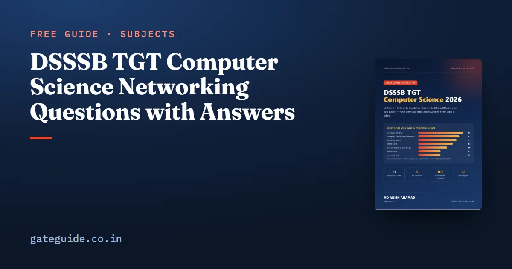

DSSSB TGT Computer Science Networking Questions with Answers

DSSSB TGT Computer Science networking questions are the single biggest block in Section B: about ten per paper across 11 past papers. The good news is that the same few ideas repeat — layers, ports, devices, addressing. This guide covers each with the fact table you need and solved questions in DSSSB style.
In this guide
Key takeaways
- Networks gave 106 of 1,100 Section B questions in 11 papers: about 9.6 per paper.
- Learn the OSI and TCP/IP layers by function, not only by name.
- Port numbers and device-to-layer matching are near-certain questions.
- IP classes, private ranges, default masks and usable hosts cover the numerical part.
- Protocols ARP, DHCP, ICMP, SMTP, POP3 and IMAP are favourite one-liners.
The words you will meet
- Protocol — the agreed rules for one kind of communication (HTTP for web pages, SMTP for sending mail).
- Port — a number that identifies the service on a host (80 for HTTP).
- Subnet mask — tells which part of an IP address is the network and which part is the host.
Layers by function
| OSI layer | What it does | Example |
|---|---|---|
| 7 Application | services to the user | HTTP, FTP, SMTP, DNS |
| 6 Presentation | format, encryption, compression | SSL/TLS (often placed here), JPEG |
| 5 Session | dialog control, synchronisation | — |
| 4 Transport | end-to-end delivery, ports, flow control | TCP, UDP |
| 3 Network | logical addressing, routing | IP, ICMP; router |
| 2 Data link | framing, MAC addresses, error detection | Ethernet; switch, bridge |
| 1 Physical | bits on the medium | cables, hub, repeater |
Remember: "Please Do Not Throw Sausage Pizza Away" — Physical, Data link, Network, Transport, Session, Presentation, Application (bottom to top).
Port numbers
| Protocol | Port | Protocol | Port |
|---|---|---|---|
| FTP data / control | 20 / 21 | DNS | 53 |
| SSH | 22 | DHCP | 67 / 68 |
| Telnet | 23 | HTTP | 80 |
| SMTP | 25 | POP3 | 110 |
| IMAP | 143 | HTTPS | 443 |
IP addressing
| Class | First octet | Default mask | Private range |
|---|---|---|---|
| A | 1–126 | 255.0.0.0 (/8) | 10.0.0.0 – 10.255.255.255 |
| B | 128–191 | 255.255.0.0 (/16) | 172.16.0.0 – 172.31.255.255 |
| C | 192–223 | 255.255.255.0 (/24) | 192.168.0.0 – 192.168.255.255 |
| D | 224–239 | multicast | — |
127.0.0.1 is the loopback address. Usable hosts = 2^(32 − prefix) − 2.
Trap: 172.32.1.1 is not private — the class B private range stops at 172.31. DSSSB uses exactly this kind of near-miss option.
Solved questions in DSSSB style
- Which layer is responsible for routing? (a) Data link (b) Network (c) Transport (d) Session — (b): routers work at the network layer.
- The protocol that maps an IP address to a MAC address is (a) RARP (b) ARP (c) DNS (d) DHCP — (b).
- Usable hosts in a /26 subnet: 2⁶ − 2 = 62.
- Which device works at the data link layer? (a) Hub (b) Repeater (c) Switch (d) Router — (c).
- Which is a private address? (a) 172.32.1.1 (b) 192.168.10.5 (c) 11.0.0.1 (d) 193.168.1.1 — (b).
- Transmission in both directions but one at a time is (a) simplex (b) half duplex (c) full duplex — (b).
- Number of links in a full mesh of n devices: n(n − 1)/2, so 6 devices need 15.
Networks sits at the top of our important topics list; the year-wise counts are in the previous year papers analysis. In the exam, these fact questions are quick wins — answer them confidently, and save guesses for the harder items, as the negative marking guide explains.
Protocols in one line each
| Protocol | One-line job |
|---|---|
| ARP / RARP | IP → MAC / MAC → IP |
| DHCP | gives IP addresses automatically |
| DNS | domain name → IP address |
| ICMP | error reports and ping |
| SMTP | sends mail |
| POP3 / IMAP | receives mail (IMAP keeps it on the server) |
| FTP | transfers files |
| SNMP | manages network devices |
How DSSSB writes networking questions
Most networking questions in DSSSB papers are one-line recall questions with four close options. The difficulty is not the concept but the distractors. A question about the layer that handles routing will offer the data link, network, transport and session layers — all real layers, all plausible to a hurried reader. A question about a private IP address will offer 172.32.1.1 next to 192.168.10.5, testing whether you know exactly where the private range ends. The defence is precise learning: not "routing is somewhere in the middle layers" but "routing is the network layer, and the router is the network-layer device".
A smaller share of questions needs a short calculation. Usable hosts in a subnet, the number of links in a full mesh, and converting a prefix length to a dotted mask are the common ones. Each has a single formula, and each takes under a minute once practised. Learn the formula, work two examples by hand, and you will not lose these marks.
Building a ten-minute daily drill
For the last two weeks, keep a ten-minute daily drill for networks. Write the seven OSI layers from memory, list ten port numbers, name the layer of four devices, and solve one subnetting question. Check yourself against the tables above. After a week the drill takes five minutes and the facts stay fresh until the exam. Because networks gave about ten questions per paper, this small habit protects close to ten marks.
Facts that are often confused
Students often swap SMTP and POP3 — remember that SMTP sends and POP3 or IMAP receive. They confuse ARP with RARP — ARP finds the MAC address for a known IP address, RARP the reverse. They place the switch at the network layer — it is a data-link device; only a layer-3 switch routes. And they forget that FTP uses two ports, 20 for data and 21 for control. Each of these pairs has appeared as a pair of options in past papers, so a single clear rule for each one saves you from the trap.
If you are unsure where to begin, start with the topic that gave the most questions in the past papers and work downwards. Write short notes as you go, revise them every few days, and test yourself with timed questions rather than only reading. Steady daily work over the remaining weeks is far more effective than long sessions in the final days, and it leaves you calm enough on the exam day to read every question carefully.
Quick revision
- OSI bottom-up: Physical, Data link, Network, Transport, Session, Presentation, Application.
- HTTP 80, HTTPS 443, FTP 20/21, SSH 22, Telnet 23, SMTP 25, DNS 53, POP3 110.
- Hub physical; switch and bridge data link; router network.
- Private: 10/8, 172.16–31, 192.168/16; loopback 127.0.0.1.
- Usable hosts = 2^(host bits) − 2; full mesh links = n(n − 1)/2.
Frequently asked questions
How many networking questions come in DSSSB TGT Computer Science?
Computer networks is the most-asked Section B topic. In 11 TGT Computer Science papers it gave 106 of 1,100 questions, about 9.6 per paper, and it was in the top three topics every year from 2017 to 2024. Expect around nine or ten networking questions in your paper.
Which port numbers should I memorise for DSSSB?
The ones asked again and again are HTTP 80, HTTPS 443, FTP 20 for data and 21 for control, SSH 22, Telnet 23, SMTP 25, DNS 53, DHCP 67 and 68, POP3 110 and IMAP 143. Learn them as a table and test yourself in both directions - port to protocol and protocol to port.
How do I calculate usable hosts in a subnet quickly?
Count the host bits, which is 32 minus the prefix length, then use 2 to the power of host bits minus 2, because the network and broadcast addresses cannot be given to hosts. A /26 subnet has 6 host bits, so 64 minus 2 gives 62 usable hosts.
At which layer do a hub, switch and router work?
A hub and a repeater work at the physical layer, a switch and a bridge at the data link layer because they use MAC addresses, and a router at the network layer because it forwards packets by IP address. A gateway can work at any layer and connects networks that use different protocols.
Sources
- DSSSB official website
- Indicative syllabus, Post Code 56/24 (Computer Networks, TCP/Protocols, Network Security)
Dates, vacancies and the syllabus are set by DSSSB and can change. Always confirm at dsssb.delhi.gov.in. GATE Guide is not affiliated with DSSSB.